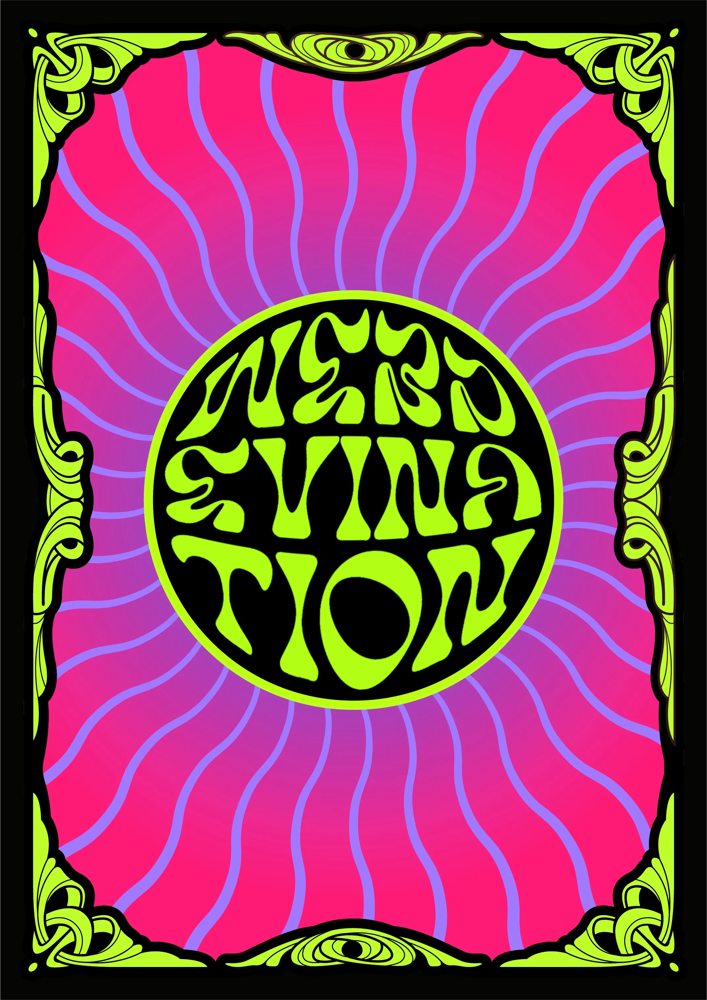

One Card Reading
Take the time to centre yourself. Take a few deep breaths. When a clear question arises, SHUFFLE the deck,
and then DRAW a card to reveal the insight you desire.
Trust your intuition, Seeker! be open, and willing to accept that you may not receive the outcome you had
hoped for.
Rest assured; whatever is meant to be will be...
